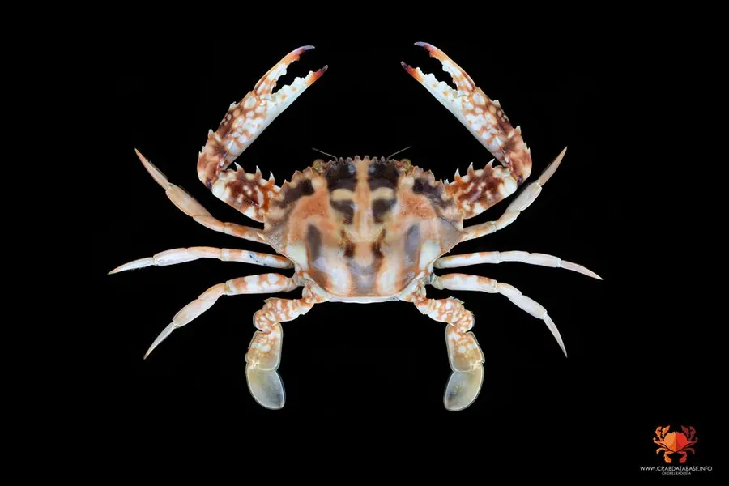

甲壳动物 · 动物界
锈斑蟳 Charybdis feriatus

分布于印度-西太平洋的大型梭子蟹，头胸甲有锈红色斑纹，螯足粗壮，肉质鲜美，是重要的经济蟹类，俗称红花蟹。
- 分类
- 门节肢动物门纲软甲纲目十足目科梭子蟹科属蟳属
- 栖息环境
- 岩礁、珊瑚礁和沙泥底，白天藏在礁石缝隙和洞穴中
- 地理分布
- 印度洋和西太平洋热带、亚热带海域，包括中国南海和东海
- 保护级别
- IUCN 暂无评估；中国未列入国家重点保护名录
物种志
锈斑蟳头胸甲宽 10–15 cm，呈横椭圆形，体色浅黄或灰白，表面有锈红色斑块和横带，边缘有锯齿；螯足粗壮，指节深色，末对步足扁平如桨。
它分布于印度洋和西太平洋的热带、亚热带海域，包括中国南海、东海、东南亚和日本南部，栖息于岩礁、珊瑚礁和沙泥底，昼伏夜出，捕食贝类、小鱼、虾蟹和底栖动物。锈斑蟳肉质鲜美，是重要的经济蟹类，市场价格较高，捕捞压力较大。它喜欢在礁石缝隙和洞穴中躲藏，繁殖期雌蟹抱卵，幼体浮游生活；它的锈红色斑纹在浅色甲面上很显眼，渔民常称它为红花蟹，冬季会向较深水域移动。目前 IUCN 暂无评估；中国未列入国家重点保护名录，需要关注捕捞强度和栖息地保护。
形态与习性
- 食性捕食贝类、小鱼、虾蟹和底栖动物
- 体型头胸甲宽 10–15 cm
- 识别头胸甲有锈红色斑块和横带
- 习性昼伏夜出，冬季向深水移动
- 繁殖雌蟹抱卵，幼体浮游生活
- 经济肉质鲜美，是重要经济蟹类
趣味知识
- 锈斑蟳的甲面上有锈红色斑块，渔民因此叫它红花蟹。
- 它是大型梭子蟹，最后一对步足扁平如桨，善于游泳。
- 冬季水温下降时，它会从浅海向较深的水域移动。